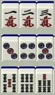
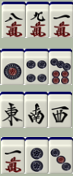
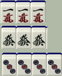
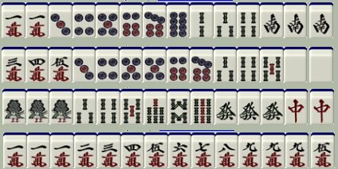
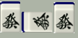
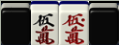
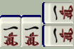
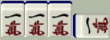
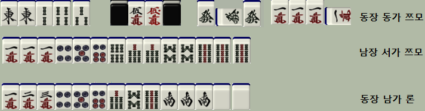

지금 설명하는 룰은 일본마작인 '리치마작'을 기준으로 하고 있습니다.
마작패는 위와 같이 이루어져 있습니다. 첫줄에 숫자가 한자로 써져있는 빨간 패들이 '만수패' 입니다. 1부터 9까지 있으며 각 패마다 4개씩 들어있습니다. (총 36개) 둘째줄에 파란 동그라미가 그려진 패들이 '통수패' 입니다. 통수패 또한 1부터 9까지 있으며 각 패마다 4개씩 들어있습니다. (총 36개) 셋째줄에 초록 대나무들로 이루어진 패들이 '삭수패' 입니다. 삭수패 역시 1부터 9까지 있으며 각 패마다 4개씩 들어있습니다. (총 36개) 숫자들을 의미하는 만수패, 통수패, 삭수패. 이들을 통틀어서 '수패'라고 합니다.(총 108개) 넷째줄에는 글자패들이라 하여 '자패' 라고 합니다. 자패는 동서남북 4방위를 나타내는 '풍패'와(바람패라고도 합니다.) 나머지 백발중을 나타내는 '삼원패'로 이루어져 있습니다. 총 7가지 종류가 있으며, 각 종류마다 4개씩 총 28개가 있습니다. 즉... 마작패 = 수패 + 자패 수패 = 만수패 + 통수패 + 삭수패 자패 = 풍패 + 삼원패 라고 정리할 수 있습니다. 참고) 5번째줄의 빨간 5들은 '아카도라'라고 하여, 넣을때도 있고 안넣을 때도 있습니다. 넣게돼면 보통 5를 하나 빼고 빨간 5를 집어넣습니다. 그 오른쪽에 꽃모양패 4개는 화패라고 하나, 리치마작에선 사용하지 않습니다.
마작을 처음 시작할 때 패를 13개를 가지고 시작합니다. 자신의 차례가 됐을 때 패 한개를 가져옵니다. 이로써 패가 14개가 됍니다. 하지만 패의 갯수를 다시 맞추기 위해 불필요한 패를 1개 버리고 13개를 맞춥니다. 이러한 상황을 반복하여, "몸통 4개에 머리 1개"를 만들면 이기는 게임입니다. 몸통은 슌츠 혹은 커쯔로 만들어집니다. 슌츠는 연속된 숫자 3개의 패를 의미합니다. 다음과 같습니다.
이와같이 연속된 숫자 3개면 슌츠를 만족합니다. 하지만 밑의 예시는 슌츠가 아닙니다.
9와 1은 연결되지 않습니다. 891은 슌츠로 인정하지 않습니다. 147이나 468처럼 2~3칸 일정한 간격으로 떨어져있다고 해서 슌츠라고 인정하지 않습니다. 풍패순서, 혹은 삼원패 순서에 따라 동남서를 나열한다고 해도 슌츠라 하지 않습니다. 애당초 자패로는 슌츠를 만들 수 없습니다. 맨 마지막 그림처럼 여러 종류의 수패를 섞으면 안됍니다. 커쯔는 똑같은 패 3개(혹은 4개)를 만들면 만족합니다.
맨 밑의 3통 4개의 경우 '깡즈'라고 부르는데, 일단은 커쯔와 같다고 생각하셔도 무방합니다. 머리는 커쯔와 비슷하게 똑같은 패 2개를 만들면 만족합니다. 그래서 몸통 4개와 머리 하나를 만들어 가면 됍니다. 예시로 다음과 같은 패가 있습니다.
위와 같은 형태를 만들면 '화료' 했다고 하며 해당 판을 이기게 됍니다.
마작은 패를 서로 한번씩 시계방향으로 한장 가져오고 버리면서 진행합니다. 이때 자신에게 필요해 보이는 패를 상대방이 버렸을때, 이를 가져오는 행위를 '후로'라고 합니다. 물론 마구잡이로 가져올 수 없고, 특정 규칙에 따라서만 가져올 수 있습니다. '후로'에는 '치', '퐁', '깡'이 있습니다. '치'는 내 왼쪽사람(상가)이 슌츠를 완성시킬 수 있는 패를 냈을 때 '치'라고 발성하고 가져올 수 있습니다. 발성 후, 슌츠를 완성시킬 나머지 패 2개를 자신의 손에서 공개한 뒤, 상가가 버린 패 한개를 가져와 자신의 우측으로 따로 빼둡니다. 그리고 자신의 패 중 1개를 버리면 됍니다. 예를들어, 자신이 2,4삭을 가지고 있는데 상가가 3삭을 냈으면...
'치' 발성 후 다음과 같이 우측에 공개하면 됍니다. 받아간 패(3삭)를 받아간 쪽 방향(왼쪽)으로 눕혀서 표시해야 합니다. '퐁'은 아무나 커쯔를 완성시킬 수 있는 패를 냈을 때 '퐁'라고 발성하고 가져올 수 있습니다. 치와 마찬가지로 발성 후 패 2개를 공개, 우측에 따로빼고 타패하면 됍니다. 예를들어, 발(發) 2장을 들고 있는데 맞은편 사람(대가)이 발을 냈을 때 '퐁'이라고 발성 후 패를 다음과 같이 놓고 타패하시면 됍니다.
'깡'은 위에서 잠깐 '깡즈'에 대해 설명했었는데, 이를 만들기 위한 발성입니다. 깡에는 '암깡', '가깡', '밍깡' 3종류가 있습니다. '암깡'은 자신의 차례때 같은 패 4개를 공개하면서 '깡'을 선언합니다. 그리고 우측에 다음과 같이 놓습니다.
'가깡'은 자신의 차례때 자신의 손패에 이미 퐁 해놓은 패의 마지막 한장이 더 있을 때 하는 '깡'입니다. 발성 후, 눕혀놓은 패 위에 다음과 같이 겹쳐놓으시면 됍니다.
'밍깡'(대명깡이라고도 합니다)은 커쯔(같은 패 3장)을 들고 있는 상태에서 상대방이 자신의 '깡즈'를 완성시킬 수 있는 마지막 패 한장을 냈을 때 하는 '깡'입니다. 다음과같이 가져온 쪽으로 눕혀서 표시하시면 됍니다.
이때, 원래 몸통의 갯수는 3개인데, 깡을 할 경우 4개가 돼어 패가 하나 모자르게 됍니다. 그래서 깡을 한 후에, 영상에서 보충패를 하나 가져옵니다. 그후 패 하나를 버리시면 됍니다.
마작에는 '역'이란게 존재합니다. '역'은 자신의 완성패가 얼마나 값어치가 있는지 기준점 역할을 합니다. 역이 많으면 많을수록 받을 점수는 올라갈 것이며, 별로 없으면 그만큼 적은 점수밖에 받지 못합니다. 그리고, 완성 형태를 만들었다고 해서 '역'이 없으면 '화료'를 할 수 없습니다. 그만큼 '역'이 중요한 것이니 많긴 하더라도 꼭 외워둬야 할 사항입니다. 마작 역은 상당히 많은 편이니 링크만 걸고 넘어가겠습니다. 링크(역)
초보자 분들께선 지금 당장 아실필요는 없는 내용입니다. 우선 '역'을 다 외우시는게 먼저입니다. 그리고 자신이 만든 패가 무슨 역을 가지고 있는지 말할 수 있을 정도가 되고 점차 익숙해지시면 부수에 대해 읽으셔도 됩니다. 부수는 점수를 정확히 계산하기 위해 필요한 사항입니다. 대략적으로, 패를 만들기 어려운 정도만큼 부수가 올라갑니다. 모든 패는 기본적으로 20부를 가지고 있으며, 멘젠론일 경우 30부부터 시작합니다. 그리고 총 4가지 요소에 따라 부수를 추가합니다. 마지막으로 10의자리로 '올림'을 하면 최종 부수가 됩니다. (ex. 계산 끝에 32부가 나왔다면 올림하여 40부가 됍니다.) 예외적으로 '치또이' 역은 무조건 25부입니다. 첫째로, '쯔모부수'입니다.(자신이 패를 직접 가져와서 화료한 경우) 상대방에게 론을 선언하여 화료한 경우 이 요소에서 얻는 부수는 0부입니다. 하지만 '쯔모'로 화료한 경우 '쯔모부수' 2부를 얻을 수 있습니다. 예외적으로, 영상개화 화료의 경우 쯔모부수가 붙지 않습니다. (부수대신 영상개화라는 1판역이 추가되는 샘)
| 부수 | |
| 쯔모 | 2 |
| 론 | 0 |
둘째로, '커쯔부수'입니다. 커쯔/깡즈 의 갯수와 형태에 따라 붙는 부수가 다릅니다. 부수는 다음과 같습니다.
| 중장패 | 귀족패 | |
| 밍커 | 2 | 4 |
| 안커 | 4 | 8 |
| 밍깡 | 8 | 16 |
| 암깡 | 16 | 32 |
여기서 귀족패는 '1, 9 자패'를 말하며, 중장패는 '2~8까지 수패'를 뜻합니다. 셋째로, '대기부수'입니다. 마작에서 대기형태로는 기본적으로 5가지가 있습니다. (예외로 국사무쌍13면팅이 있지요.) '양면대기'(23삭을 들고 14삭을 기다리는 경우)는 부수가 붙지 않습니다. (0부) '간짱대기'(24삭을 지니고 3삭을 기다리는 경우, 칸대기)는 2부가 추가됩니다. '변짱대기'(24삭을 지니고 3삭을 기다리는 경우, 펜대기)는 2부가 추가됩니다. '단기대기'(머리가 없어서 1통 하나 들고 다른1통을 기다리는 경우)는 2부가 추가됩니다. '샤보대기'(1통2개 2통2개에서 1,2통을 기다리는 경우)는 부수가 붙지 않습니다. (이미 커쯔에서 부수가 붙기 때문에 따로 부수를 쳐주지 않는 것이지요.)
| 대기형태 | 부수 |
| 양면 | 0 |
| 샤보 | 0 |
| 간짱 | 2 |
| 변짱 | 2 |
| 단기 | 2 |
만약에 여러가지 대기로 볼 수 있는 형태라면 '고득점'이 되는 방향으로 해석하시면 됩니다. 마지막으로 '머리부수'입니다. 머리가 만약 안커가 됐을 때 역이 붙는 경우, 부수가 추가됍니다. 부수는 다음과 같습니다. (연풍패는 동장에 동가일 때 동패를, 남장에 남가일때 남패를 뜻합니다.)
| 머리형태 | 부수 |
| 연풍패 | 4 |
| 자풍패 | 2 |
| 판풍패 | 2 |
| 삼원패 | 2 |
| 타풍패 | 0 |
| 수패 | 0 |
이 4가지 요소를 고려해서 부수를 계산하시면 됍니다. 예시로 3가지만 들자면...
첫번째는 기본20부 + 쯔모부수2부 + 중장패암깡16부 + 귀족패밍깡16부 + 간짱대기2부 + 연풍패머리4부 = 60부 올림해도 60부입니다. 두번째는 기본20부 + 쯔모부수2부 + 귀족패안커8부 + 단기대기2부 = 32부 올림하여 40부입니다. 물론 78삭 양면대기로 볼 수도 있겠지만, 9삭단기로도 볼 수 있기에, 고득점으로 해석합니다. 세번째는 멘젠론30부 + 귀족패안커 8부 + 단기대기2부 + 삼원패머리2부 = 42부 올림하여 50부입니다.
위에서 구했던 역과 부수를 토대로 패의 점수를 매깁니다. 점수는 다음과 같습니다.
| 부수 | 1판 | 2판 | 3판 | 4판 | |||||
| 친 | 자 | 친 | 자 | 친 | 자 | 친 | 자 | ||
| 20부 | 론 | - | - | - | - | ||||
| 쯔모 | - | 700 | 400 | 1300 | 700 | 2600 | 1300 | ||
| 30부 | 론 | 1000 | 2000 | 3900 | 7700 | ||||
| 쯔모 | 500 | 300 | 1000 | 500 | 2000 | 1000 | 3900 | 2000 | |
| 40부 | 론 | 1300 | 2600 | 5200 | 만관 | ||||
| 쯔모 | 700 | 400 | 1300 | 700 | 2600 | 1300 | |||
| 50부 | 론 | 1600 | 3200 | 6400 | |||||
| 쯔모 | 800 | 400 | 1600 | 800 | 3200 | 1600 | |||
| 60부 | 론 | 2000 | 3900 | 7700 | |||||
| 쯔모 | 1000 | 500 | 2000 | 1000 | 3900 | 2000 | |||
| 70부 | 론 | 2300 | 4500 | 만관 | |||||
| 쯔모 | 1200 | 600 | 2300 | 1200 | |||||
| 부수 | 1판 | 2판 | 3판 | 4판 | |
| 20부 | 론 | - | - | - | |
| 쯔모 | - | 700 | 1300 | 2600 | |
| 30부 | 론 | 1500 | 2900 | 5800 | 11600 |
| 쯔모 | 500 | 1000 | 2000 | 3900 | |
| 40부 | 론 | 2000 | 3900 | 7700 | 만관 |
| 쯔모 | 700 | 1300 | 2600 | ||
| 50부 | 론 | 2400 | 4800 | 9600 | |
| 쯔모 | 800 | 1600 | 3200 | ||
| 60부 | 론 | 2900 | 5800 | 11600 | |
| 쯔모 | 1000 | 2000 | 3900 | ||
| 70부 | 론 | 3400 | 6800 | 만관 | |
| 쯔모 | 1200 | 2300 |
| 화료한 사람 |
지불할 사람 |
만관 (5판) |
하네만 (6~7판) |
배만 (8~10판) |
삼배만 (11~12판) |
역만 (13판이상) |
|
| 자 | 론 | 8000 | 12000 | 16000 | 24000 | 36000 | |
| 쯔모 | 자 | 2000 | 3000 | 4000 | 6000 | 8000 | |
| 친 | 4000 | 6000 | 8000 | 12000 | 16000 | ||
| 친 | 론 | 12000 | 18000 | 24000 | 36000 | 48000 | |
| 쯔모 | 4000 | 6000 | 8000 | 12000 | 16000 | ||
예를 여러개 들자면... '자'가 리치 쯔모 핑후 도라 4판 20부 패라고 한다면 친은 2600, 자는 1300냅니다. 자가 중 혼일의 3판 30부로 론을 선언했다면 3900을 얻어갑니다. 친이 9판으로 론을 선언했다면 24000점입니다. 등등... 표를 이용하여 점수를 선언하시면 됍니다. 참고로, 1판~4판에서 부수를 반으로 줄이고 판수를 1개 늘리면 점수가 같습니다. ex) 2판 40부와 3판 20부가 2600점으로 같습니다. 이를 이용하여, 치또이는 25부인데 판수를 하나 줄이고 50부를 봐서 계산하면 됍니다. ex) 치또이 도라도라 4판 25부가 3판 50부의 점수와 같으니 6400점입니다.
마작그림 src : "http://tenhou.net/2/" BGM src : "https://youtu.be/Mg1M5_V5v_8" ☎ : 010-2781-8889 email : insg1993@naver.comTop <